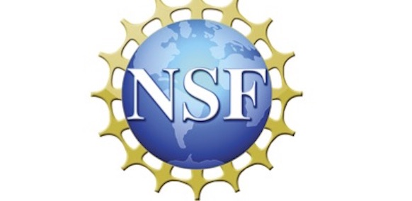

Tweet: New lab result
Short description of the tweet or highlight from the lab's Twitter feed.
Advancing the frontiers of wireless communications through quantum computing and artificial intelligence

Lab Director - Assistant Professor of Computer Science and Engineering
Assistant Professor Vini Chaudhary leads the WiQ-AI Lab, focusing on quantum-enabled communication algorithms, AI-driven network optimization, and advanced wireless systems. She has a long record of publications and mentorship of graduate students across theory and systems.
Research areas: Quantum computing for communications, AI for wireless networks, 6G architectures.
Positions: Assistant Professor, Department of Computer Science and Engineering; Director, WiQ-AI Lab.
Next-generation wireless systems and networks
Quantum algorithms for communication systems
AI-driven wireless optimization and control
Short description of the tweet or highlight from the lab's Twitter feed.
Short description or excerpt from the LinkedIn post. If embed isn't allowed, open the original post.
Short excerpt from the university news page describing the breakthrough and impact.
Tip: embedded previews sometimes are blocked by the source site. Use the "Open" links to view the original post if the preview doesn't load.
